Astra Militarum
Les régiments de la Garde impériale forment le cœur des forces terrestres de l’Imperium. Ils défendent les mondes humains grâce à leur discipline, leur nombre et leurs véhicules de guerre.
Les grandes puissances de la galaxie
Au 41e millénaire, les armées de l’Imperium, les serviteurs du Chaos et les peuples xenos se disputent la galaxie. Les factions sont présentées en premier, suivies de fiches illustrées sur quelques personnages importants.
L’Imperium est un immense régime humain gouverné au nom de l’Empereur. Ses armées rassemblent des soldats ordinaires, des guerriers augmentés et des prêtres de la machine.
Les régiments de la Garde impériale forment le cœur des forces terrestres de l’Imperium. Ils défendent les mondes humains grâce à leur discipline, leur nombre et leurs véhicules de guerre.
Les prêtres de Mars vénèrent le Dieu-Machine. Ils entretiennent les technologies de l’Imperium et envoient au combat des Skitarii, des serviteurs augmentés et des machines de guerre.
Ces guerriers génétiquement améliorés combattent dans des chapitres indépendants, chacun doté de ses propres traditions et tactiques.
Les Sœurs de Bataille sont les guerrières de l’Ecclésiarchie. Elles protègent la foi impériale et combattent au nom de l’Empereur.
Les Custodes sont les gardes personnels de l’Empereur : une force d’élite composée de guerriers soigneusement façonnés et équipés.
Les puissances du Chaos viennent du Warp. Leurs armées comprennent des Space Marines renégats, des humains corrompus et des démons liés aux dieux du Chaos.
D’anciens Space Marines ont trahi l’Imperium pendant l’Hérésie d’Horus. Leurs légions poursuivent la guerre contre l’Empereur et ses armées.
Cette légion endurcie répand les maladies et sert Nurgle, le dieu du Chaos associé à la peste et à la décomposition.
Cette légion de sorciers et de guerriers en armure sert Tzeentch, le dieu du changement et de la magie.
Les World Eaters sont des guerriers voués à Khorne, le dieu du sang et de la guerre. Ils cherchent le combat rapproché et le carnage.
Les démons sont des créatures du Warp qui servent les dieux du Chaos et apparaissent dans l’espace réel.
Cette légion renégate recherche les sensations extrêmes et sert Slaanesh, le dieu du Chaos associé à l’excès.
Les xenos sont les peuples extraterrestres de la galaxie. Leurs civilisations et leurs objectifs sont très différents, et elles s’opposent aussi bien à l’Imperium qu’aux forces du Chaos.
Les Orks sont des combattants brutaux qui se rassemblent en grandes hordes appelées Waaagh! pour trouver de nouvelles batailles.
Les Nécrons sont une ancienne civilisation qui s’est enfermée dans des corps métalliques et se réveille après des millions d’années.
Les Aeldari sont les survivants d’une civilisation ancienne. Leurs vaisseaux-mondes abritent des peuples qui cherchent à éviter l’extinction.
Les Drukhari lancent des raids depuis Commorragh, leur cité dans la Toile, afin de capturer des prisonniers et des ressources.
L’Empire T’au s’étend grâce à sa technologie avancée et à l’idéal du Bien Suprême.
Les Tyranides sont des organismes extraterrestres organisés par l’Esprit-ruche. Leurs flottes dévorent la biomasse des mondes qu’elles envahissent.
Ces cultes infiltrent les sociétés humaines et préparent l’arrivée des flottes tyranides.
Les Ligues de Votann rassemblent des communautés de Kin, des humanoïdes robustes qui exploitent les régions riches en ressources de la galaxie.
Pour se repérer dans la galaxie
Voici quelques figures qui ont marqué les grands conflits du 41e millénaire.
Faction : Imperium

Fondateur de l’Imperium, l’Empereur a uni l’humanité avant l’Hérésie d’Horus. Gravement blessé pendant cette guerre, il demeure sur le Trône d’Or, où il protège l’Imperium et guide les navigateurs à travers le Warp. Sa présence sur le Trône d’Or maintient l’Astronomican, repère psychique indispensable aux voyages de l’Imperium.
Faction : Imperium - Space Marines
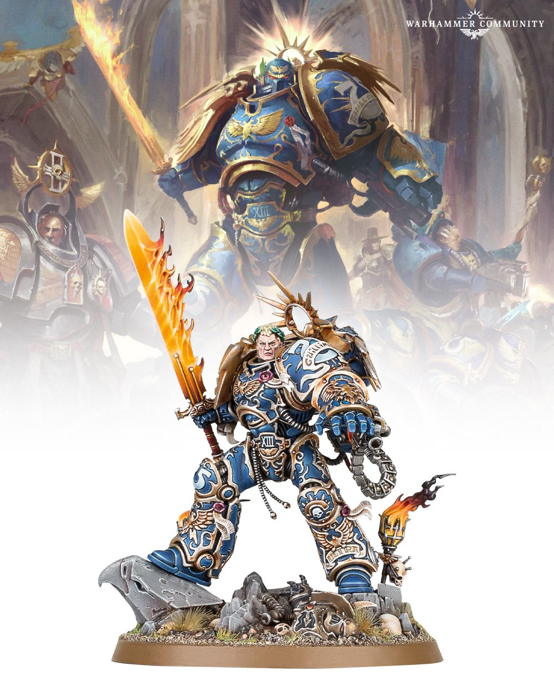
Primarque des Ultramarines, Guilliman est revenu après des millénaires d’absence. Il dirige aujourd’hui une grande partie des forces impériales et tente de maintenir l’Imperium uni. Il s’appuie sur le Codex Astartes et sur les forces de l’Indomitus Crusade pour rétablir des communications entre les mondes impériaux.
Source de l’imageFaction : Imperium - Astra Militarum
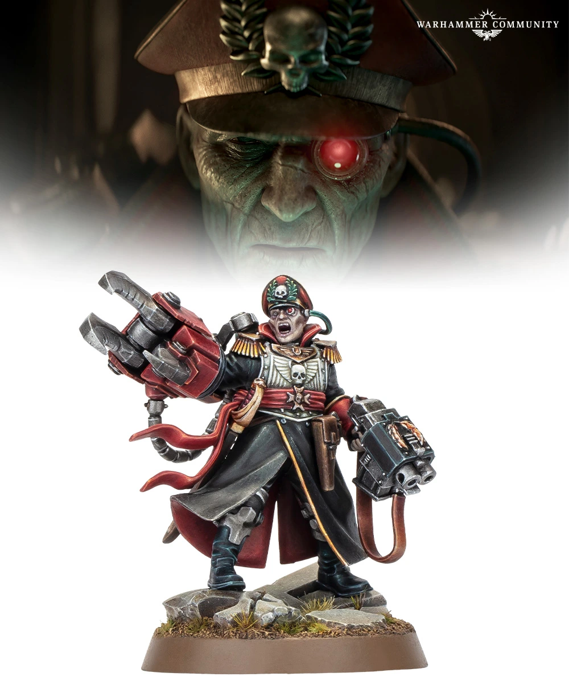
Héros de la ruche Hades, Yarrick est un commissaire légendaire de l’Astra Militarum. Son courage et son sens tactique inspirent les soldats pendant les guerres d’Armageddon. Sa rivalité avec Ghazghkull a marqué les guerres d’Armageddon et fait de lui un symbole de résistance pour les soldats impériaux.
Source de l’imageFaction : Imperium - Astra Militarum
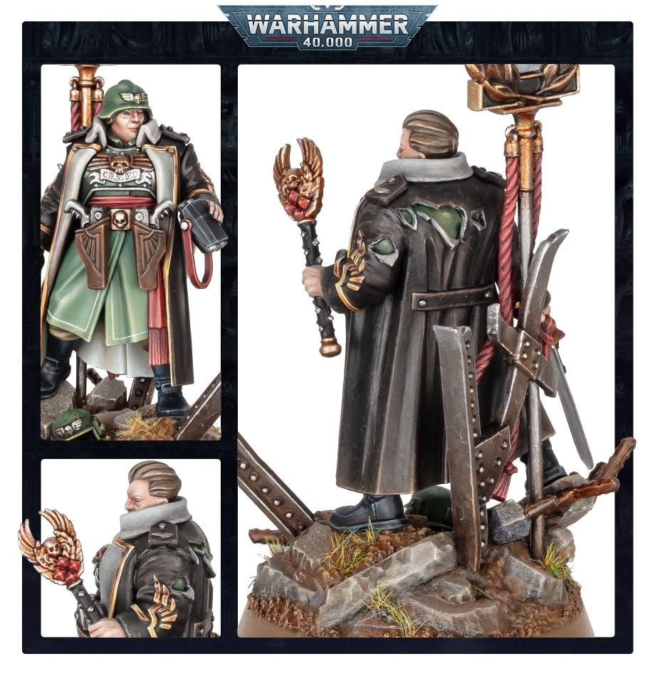
Lord Castellan de Cadia, Ursula Creed a repris le rôle de commandement autrefois occupé par son père. Elle dirige les forces cadiennes et défend les mondes impériaux avec détermination. Son sceptre de fonction et ses pistolets reliques rappellent à la fois son rang et son héritage militaire.
Source de l’imageFaction : Imperium - Astra Militarum
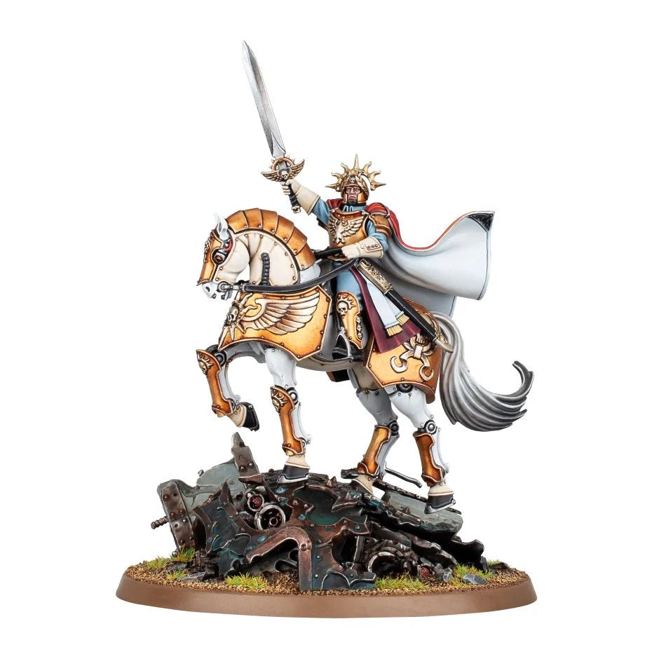
Lord Solar Leontus est le commandant suprême des armées de l’Astra Militarum. Il parcourt les zones de guerre sur son destrier cybernétique Konstantin et coordonne des forces issues de nombreux régiments. Sa maîtrise de la stratégie lui permet de diriger des campagnes à l’échelle de systèmes entiers.
Source de l’imageFaction : Imperium - Astra Militarum, Fantômes de Gaunt
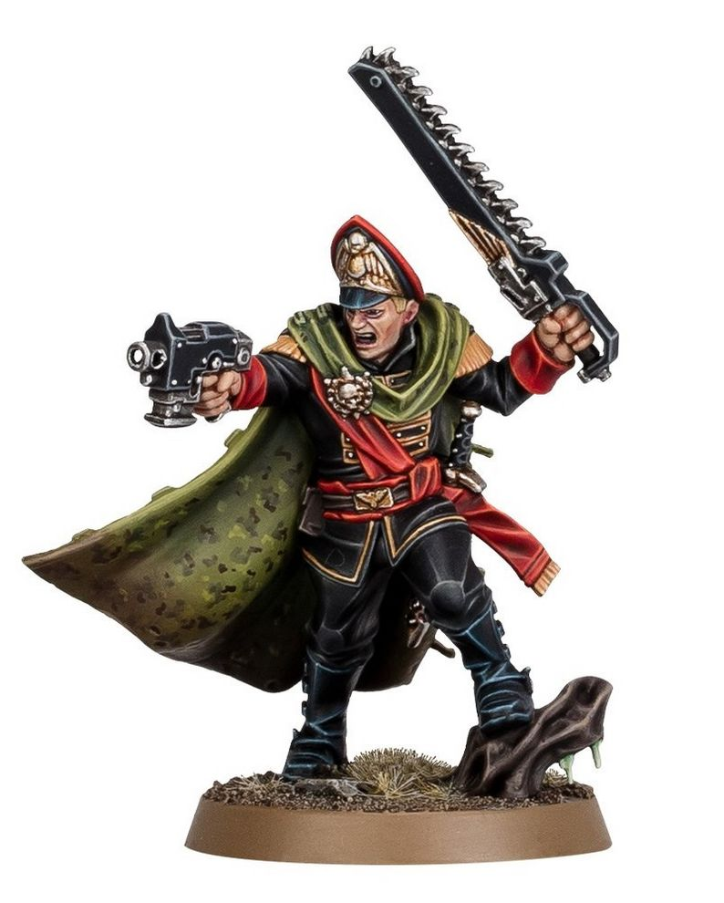
Ibram Gaunt commande le premier et unique régiment de Tanith, aussi connu sous le nom des Fantômes de Gaunt. Commissaire et chef de terrain, il protège ses soldats tout en les menant dans des opérations dangereuses. Son régiment est réputé pour sa discrétion, son camouflage et ses tactiques d’infiltration.
Source de l’imageFaction : Imperium - Astra Militarum, Catachan
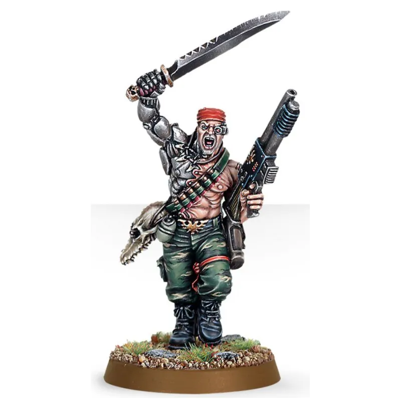
Colonel des troupes de Catachan, Iron Hand Straken est un vétéran endurci par les campagnes sur des mondes hostiles. Après avoir perdu un bras lors d’une attaque, il a reçu une prothèse bionique et a continué à combattre en première ligne. Il inspire ses soldats par son endurance et son tempérament agressif.
Source de l’imageFaction : Imperium - Adeptus Mechanicus
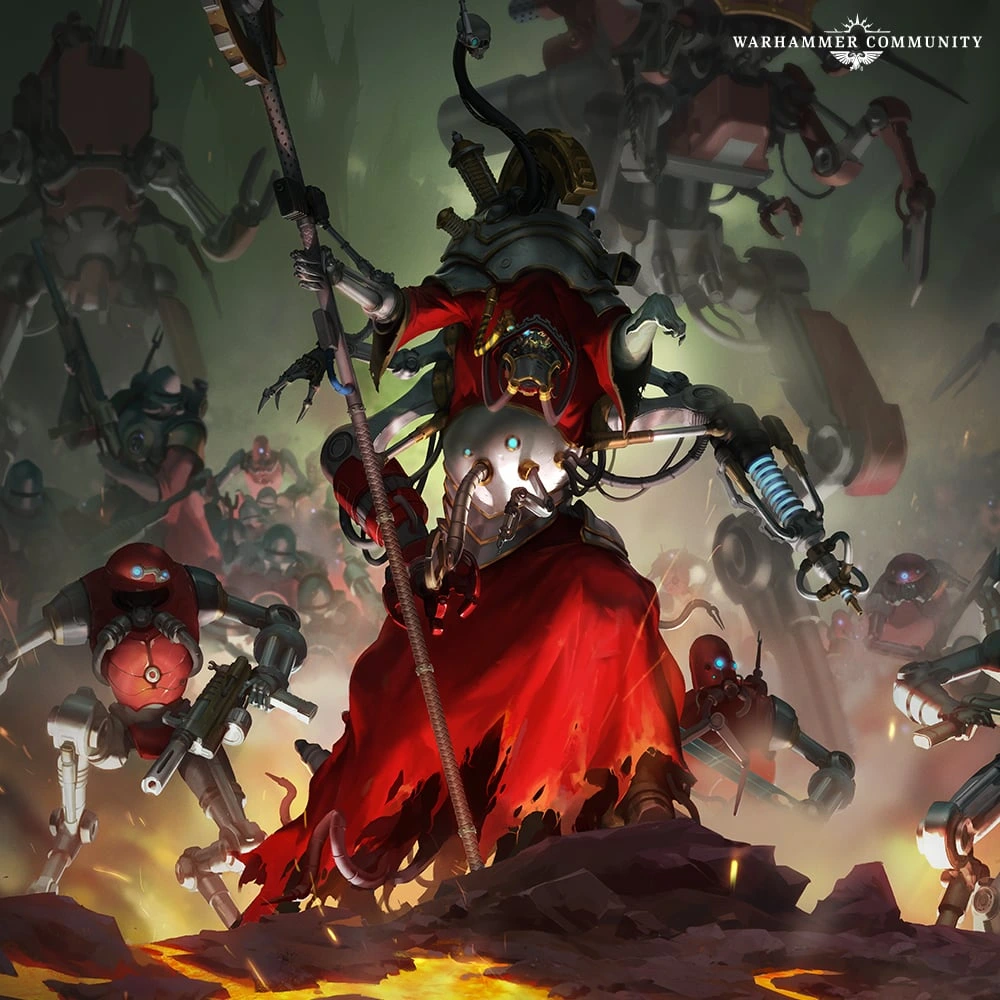
Cawl est un archmagos de l’Adeptus Mechanicus, réputé pour ses recherches et ses innovations technologiques. Il a notamment contribué au retour de Roboute Guilliman et à la création des Space Marines Primaris. Ses projets mêlent savoir ancien et technologie expérimentale, ce qui lui vaut autant de reconnaissance que de méfiance au sein de l’Adeptus Mechanicus.
Source de l’imageFaction : Imperium - Space Marines
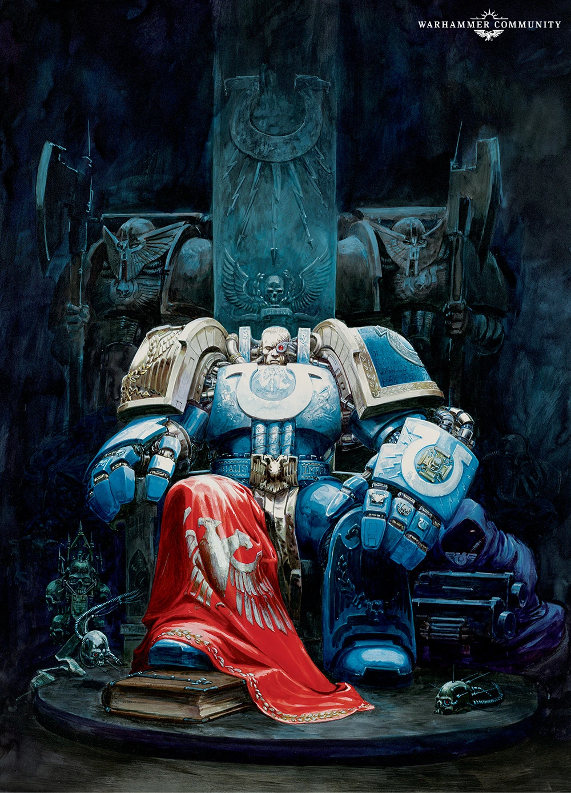
Maître de chapitre des Ultramarines, Calgar est un stratège respecté qui mène ses guerriers au combat. Il a défendu Ultramar contre les Orks, les Nécrons et les Tyranides. À la tête de son chapitre, il applique les principes de Guilliman tout en adaptant ses stratégies aux menaces nouvelles qui frappent Ultramar.
Source de l’imageFaction : Imperium - Adepta Sororitas
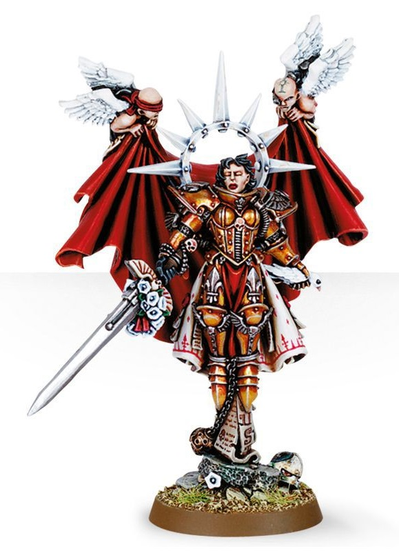
Sainte Célestine est une sainte vivante de l’Imperium. Elle combat aux côtés de l’Adepta Sororitas et inspire les Sœurs de Bataille par sa foi et ses apparitions miraculeuses. Elle réapparaît dans les périodes de crise et accompagne parfois les armées impériales, considérée comme un signe d’espoir par les croyants.
Source de l’imageFaction : Imperium - Adeptus Custodes
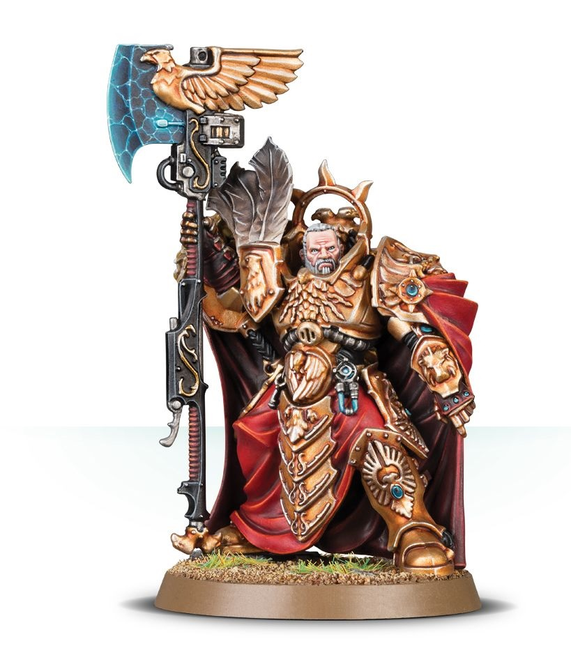
Capitaine-général des Adeptus Custodes, Trajann Valoris est leur chef et l’un de leurs combattants les plus redoutables. Il manie la hache Watcher’s Axe et le mécanisme temporel appelé Moment Shackle. Il dirige la garde rapprochée de l’Empereur et décide quand les Custodes doivent intervenir au-delà du palais impérial.
Source de l’imageFaction : Imperium - Dark Angels
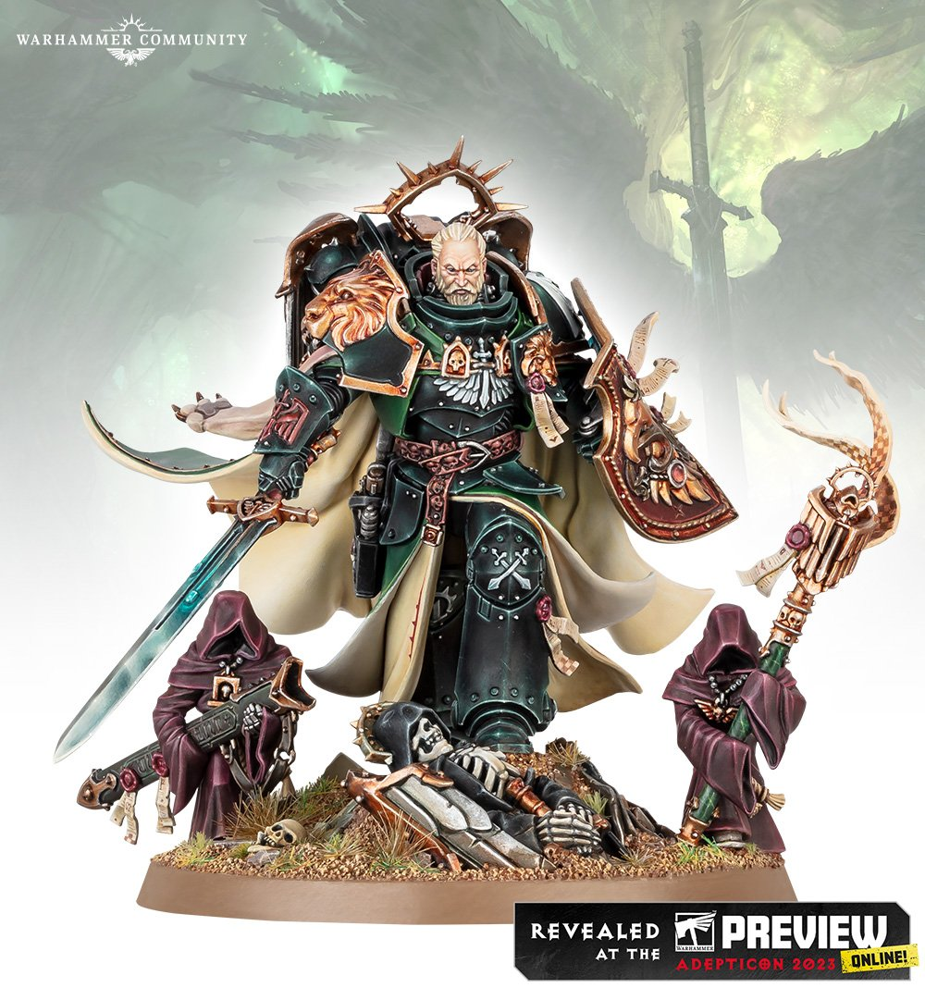
Primarque des Dark Angels, le Lion est revenu après dix mille ans d’absence. Ce chevalier solitaire traque les ennemis de l’humanité avec son épée Fealty et le bouclier de l’Empereur. Son retour dans une partie de l’Imperium coupée du reste de la galaxie lui donne un rôle essentiel dans la défense des mondes isolés.
Source de l’imageFaction : Imperium - Blood Angels
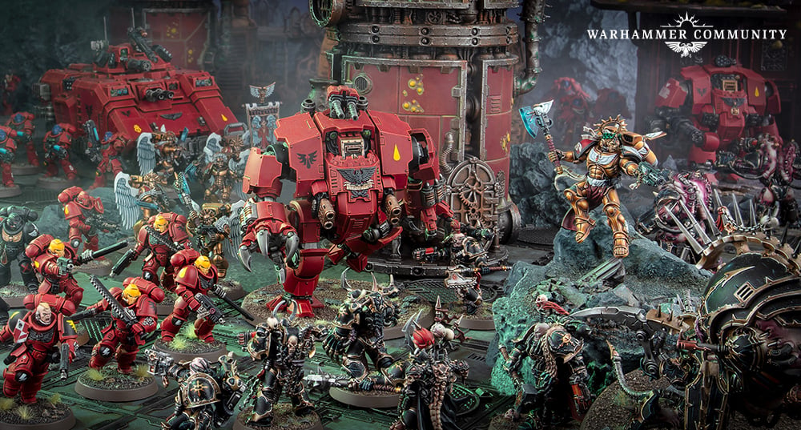
Maître de chapitre des Blood Angels et Régent de l’Imperium Nihilus, Dante est un vétéran qui a défendu le monde de Baal contre les Tyranides. Sa longue expérience et son sens du devoir en font un chef respecté, même si le poids de ses responsabilités le pousse souvent à poursuivre le combat sans repos.
Source de l’imageFaction : Imperium - Adepta Sororitas
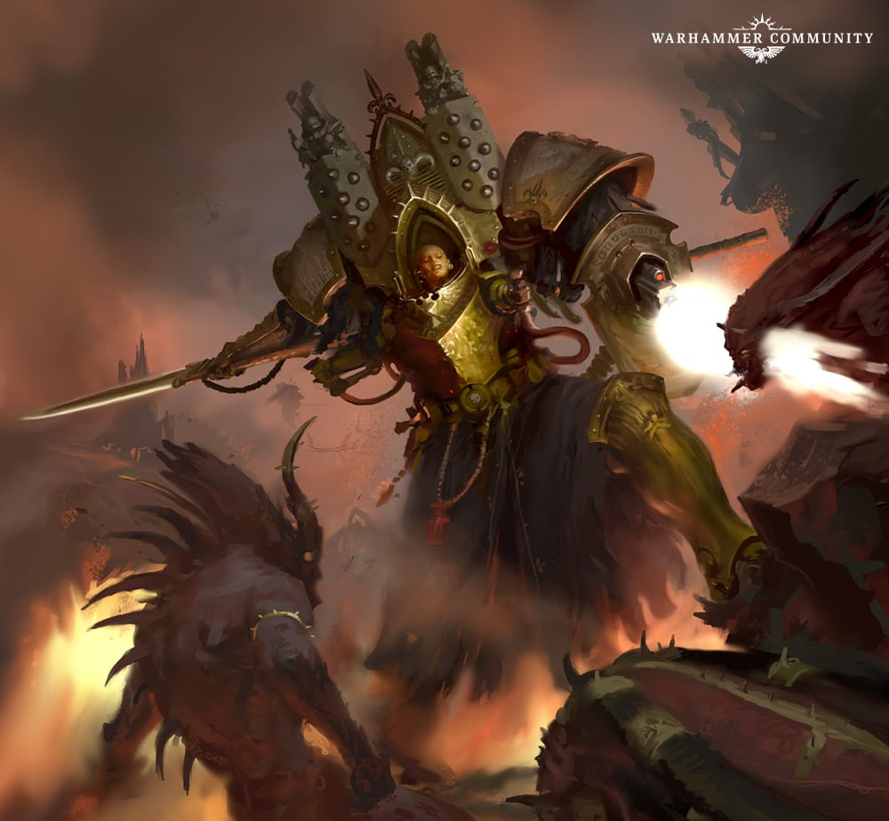
Abbesse Sanctorum et dirigeante des Adepta Sororitas, Morvenn Vahl mène ses Sœurs de Bataille au cœur des combats dans son puissant exo-armure Parangon. Son autorité dépasse l’ordre des Sœurs de Bataille : elle siège parmi les dirigeants impériaux tout en privilégiant la présence sur le front.
Source de l’imageFaction : Imperium - Dark Angels
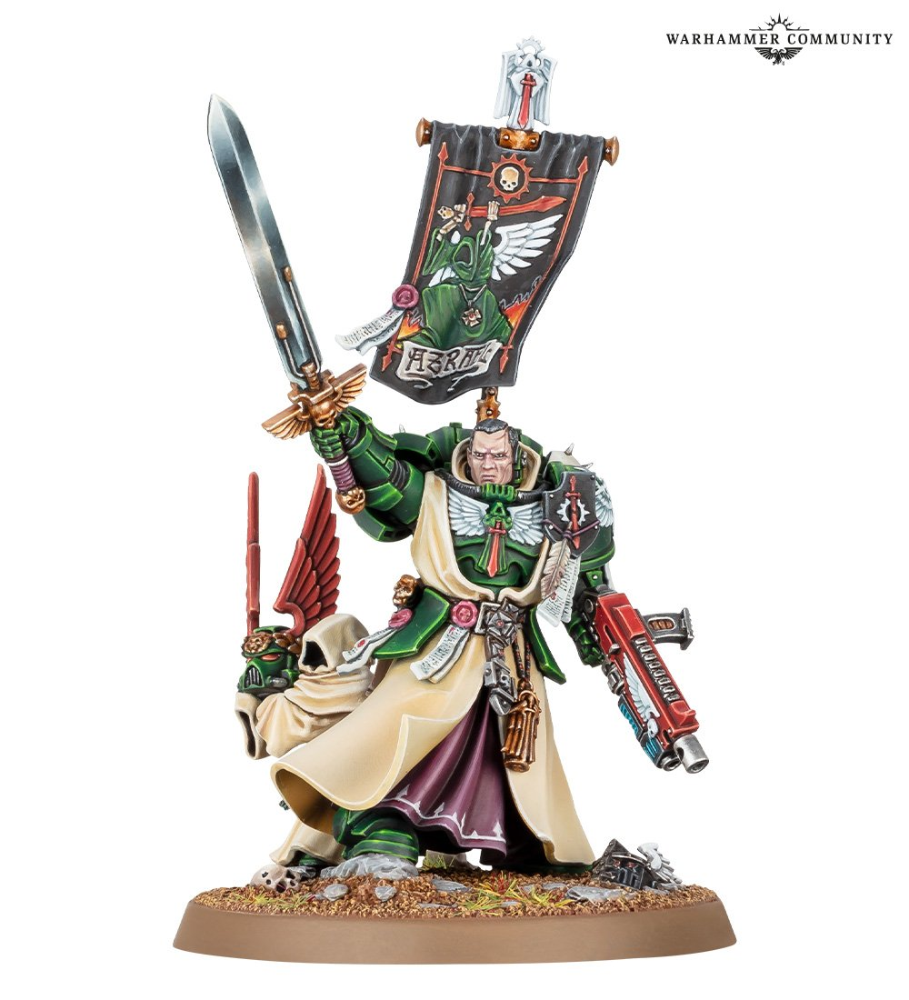
Maître suprême des Dark Angels, Azrael dirige le chapitre depuis des siècles. Il porte le Heaume du Lion et l’Épée des Secrets au combat. Gardien des traditions et des secrets des Dark Angels, il coordonne les différentes ailes du chapitre face aux menaces qui pèsent sur ses frères.
Source de l’imageFaction : Imperium - Space Marines, Ultramarines
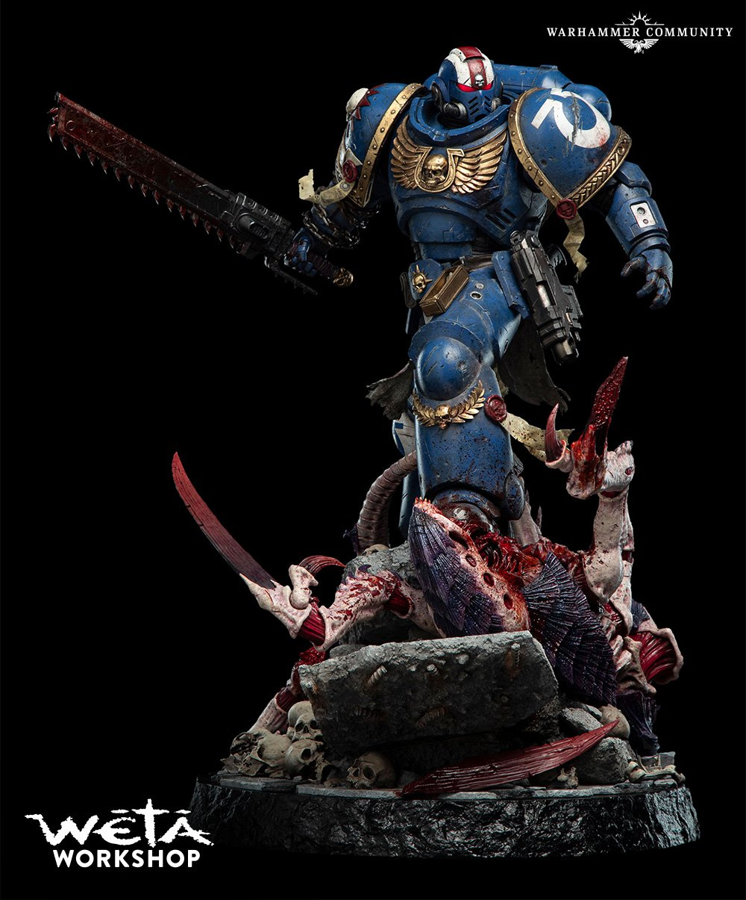
Demetrian Titus est un officier des Ultramarines et le héros de Space Marine 2. Résistant et expérimenté, il reprend le combat contre les Tyranides après avoir retrouvé sa place au sein du chapitre. Ses campagnes l’ont opposé aux Orks, aux hérétiques et aux Tyranides; il garde une réputation de combattant déterminé parmi les Ultramarines.
Source de l’imageFaction : Chaos - Black Legion
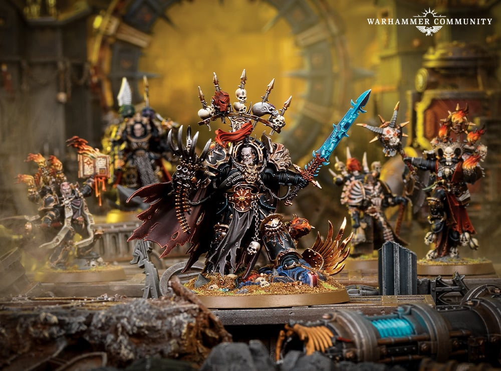
Maître de guerre du Chaos et chef de la Black Legion, Abaddon mène les croisades noires contre l’Imperium. Il cherche à achever la guerre commencée par Horus. Il rassemble des bandes rivales sous une même bannière et lance ses Croisades Noires depuis l’Œil de la Terreur.
Source de l’imageFaction : Chaos - Death Guard
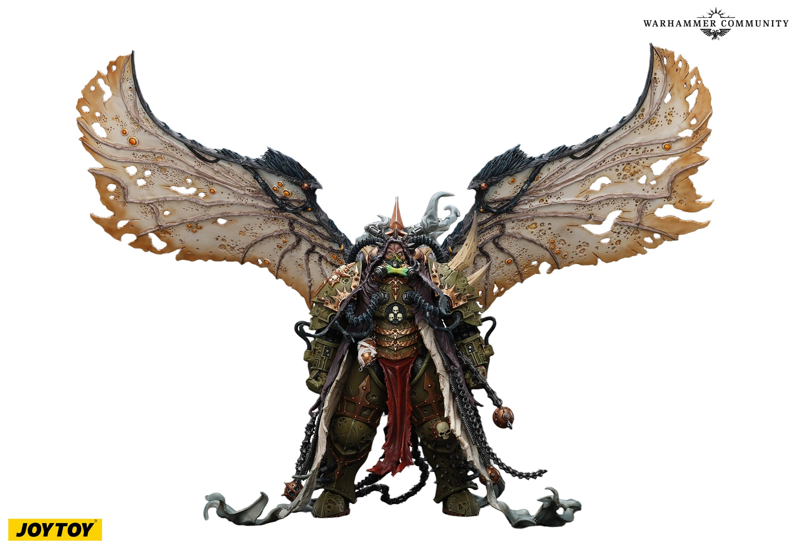
Mortarion est le primarque démoniaque de la Death Guard. Au service de Nurgle, il mène sa légion et répand les maladies sur les mondes qu’elle envahit. Son armure et son corps sont imprégnés des maladies de Nurgle; sa présence transforme les champs de bataille en foyers de corruption.
Source de l’imageFaction : Chaos - Thousand Sons
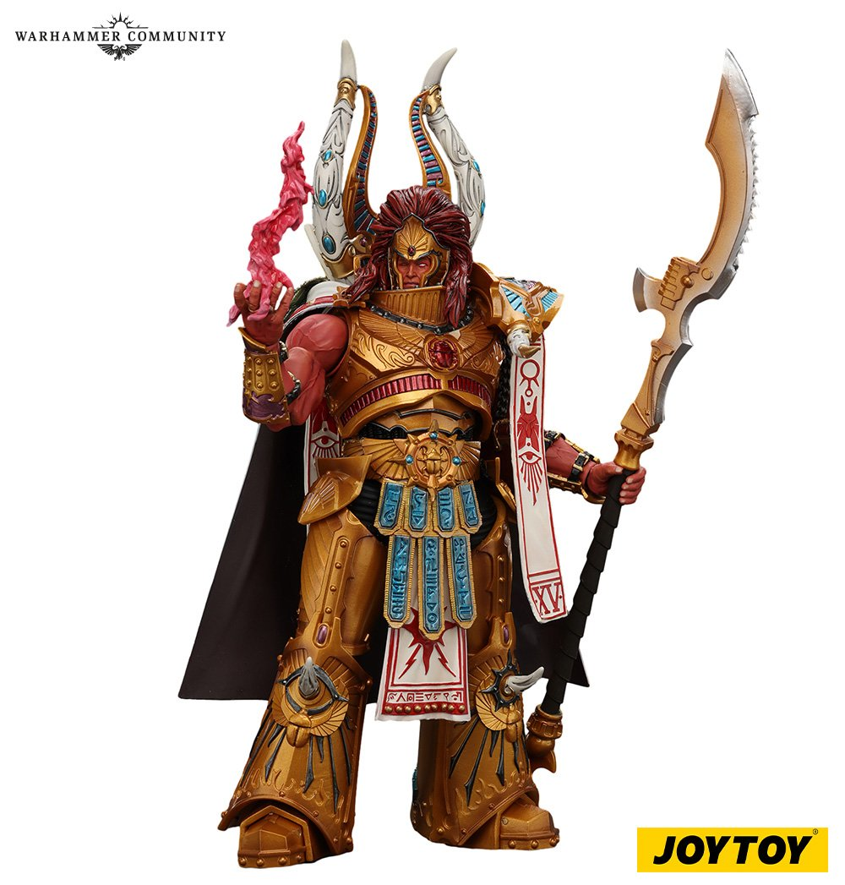
Magnus le Rouge est le primarque des Thousand Sons et un puissant sorcier. Transformé en démon par Tzeentch, il conduit sa légion dans sa quête de savoir et de pouvoir. La destruction de Prospero et son pacte avec Tzeentch ont brisé son ancienne loyauté, sans éteindre sa quête de connaissances interdites.
Source de l’imageFaction : Chaos - World Eaters
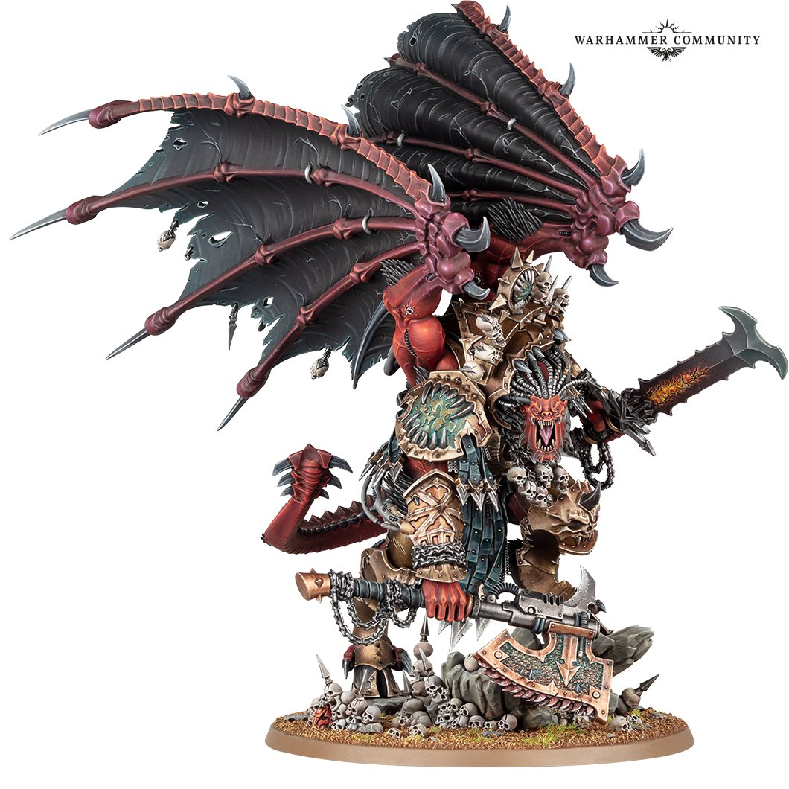
Angron est le primarque démoniaque des World Eaters. Consacré à Khorne, il mène ses guerriers dans des assauts marqués par la rage et le combat rapproché. Capturé puis réduit en esclavage sur Nuceria, il porte les Clous du Boucher, implants qui alimentent une colère presque impossible à apaiser.
Source de l’imageFaction : Chaos - Emperor Children
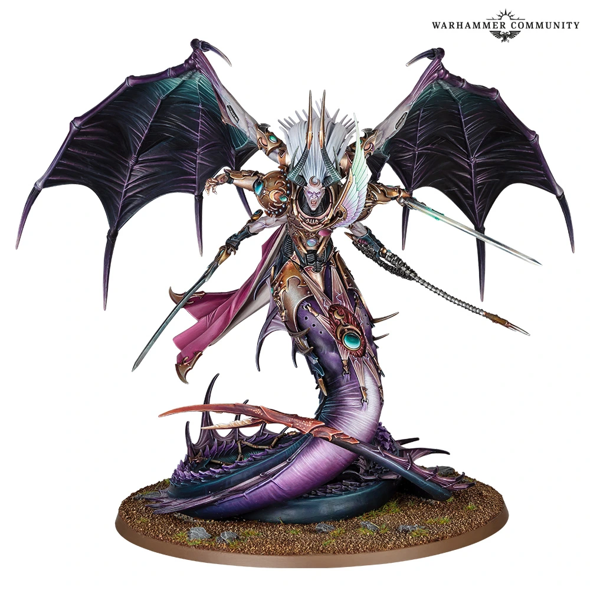
Fulgrim est le primarque des Emperor’s Children. Devenu un démon de Slaanesh, il mène sa légion dans une recherche sans fin de sensations, de perfection et d’excès. Sa quête de perfection l’a conduit à trahir l’Imperium; il pousse désormais les Emperor’s Children à rechercher toujours plus d’excès.
Source de l’imageFaction : Chaos - Demons du Chaos
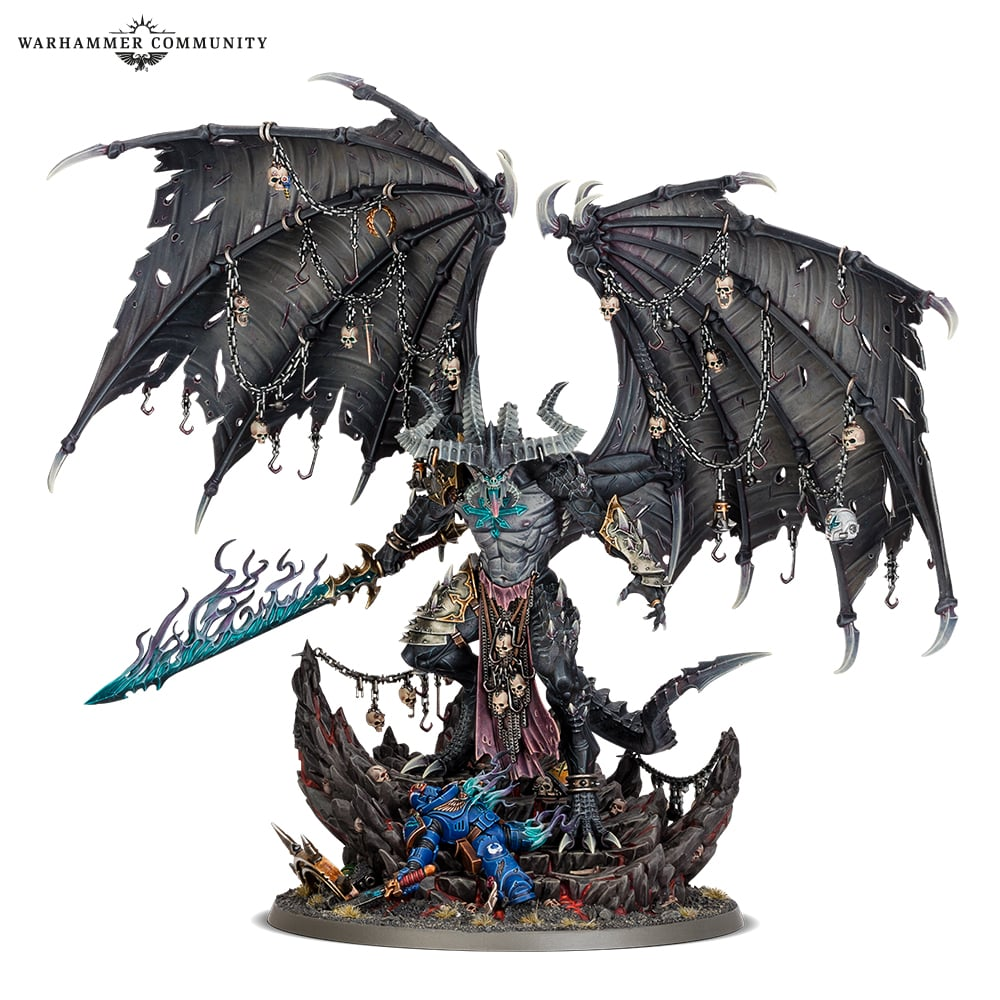
Be’lakor est le Maître des Ténèbres, un démon ancien qui sert ses propres ambitions. Il rassemble des démons du Chaos et manipule les conflits à son avantage. Il convoite une puissance indépendante des dieux qui l’ont élevé et cherche à renverser ceux qui tentent de le contrôler.
Source de l’imageFaction : Chaos - World Eaters
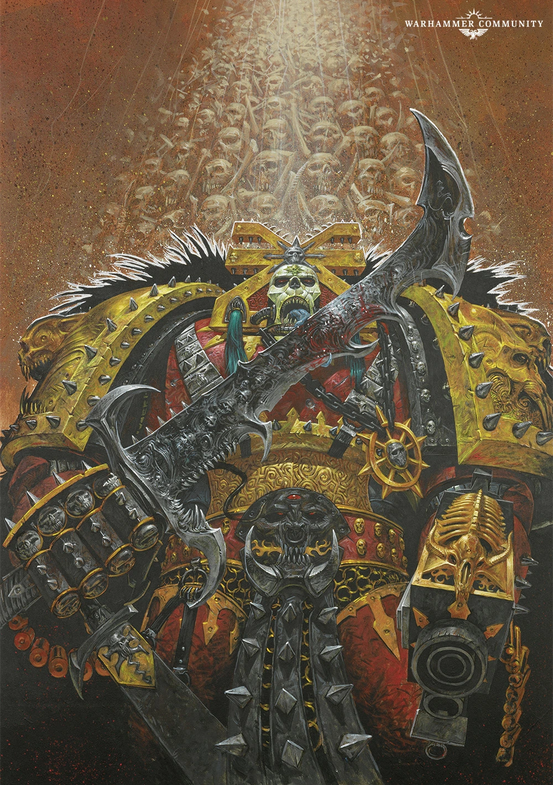
Khârn est l’un des guerriers les plus redoutés des World Eaters. Emporté par sa rage et dévoué à Khorne, il incarne la violence de sa légion. Au milieu de la mêlée, il ne distingue souvent plus ses adversaires de ses alliés, ce qui lui a valu son surnom redouté.
Source de l’imageFaction : Chaos - Thousand Sons

Ahriman est le grand sorcier des Thousand Sons. Il cherche à annuler la malédiction qui a transformé les guerriers de sa légion en armures animées. Le rituel qui devait sauver les Thousand Sons a pétrifié la plupart de ses frères en armures; depuis, il cherche à défaire cette malédiction.
Source de l’imageFaction : Chaos - World Eaters et démons de Khorne
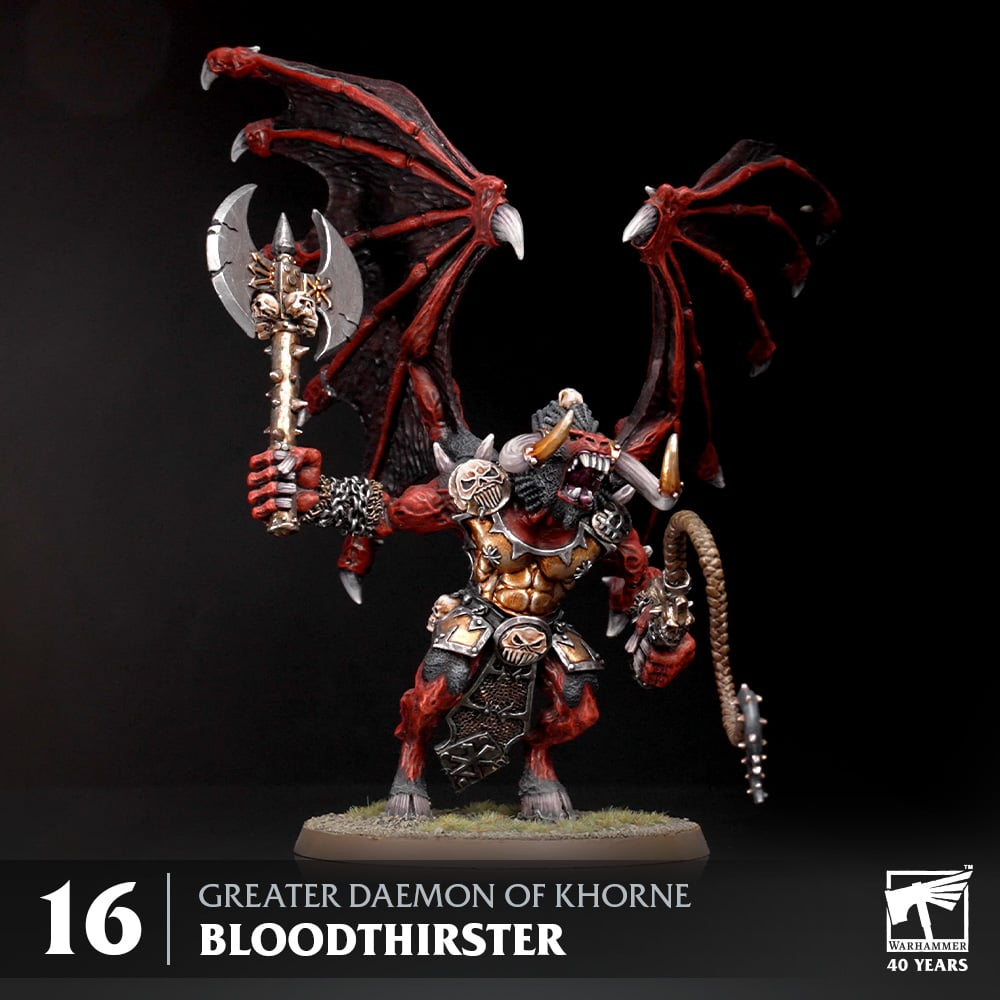
Khorne est le dieu du sang, de la guerre et des crânes. Ses démons majeurs, les Buveurs de Sang, incarnent sa colère et sa soif de combat. Ses fidèles méprisent la sorcellerie et glorifient la force, les combats directs et les trophées pris à leurs ennemis.
Source de l’imageFaction : Chaos - Thousand Sons et démons de Tzeentch
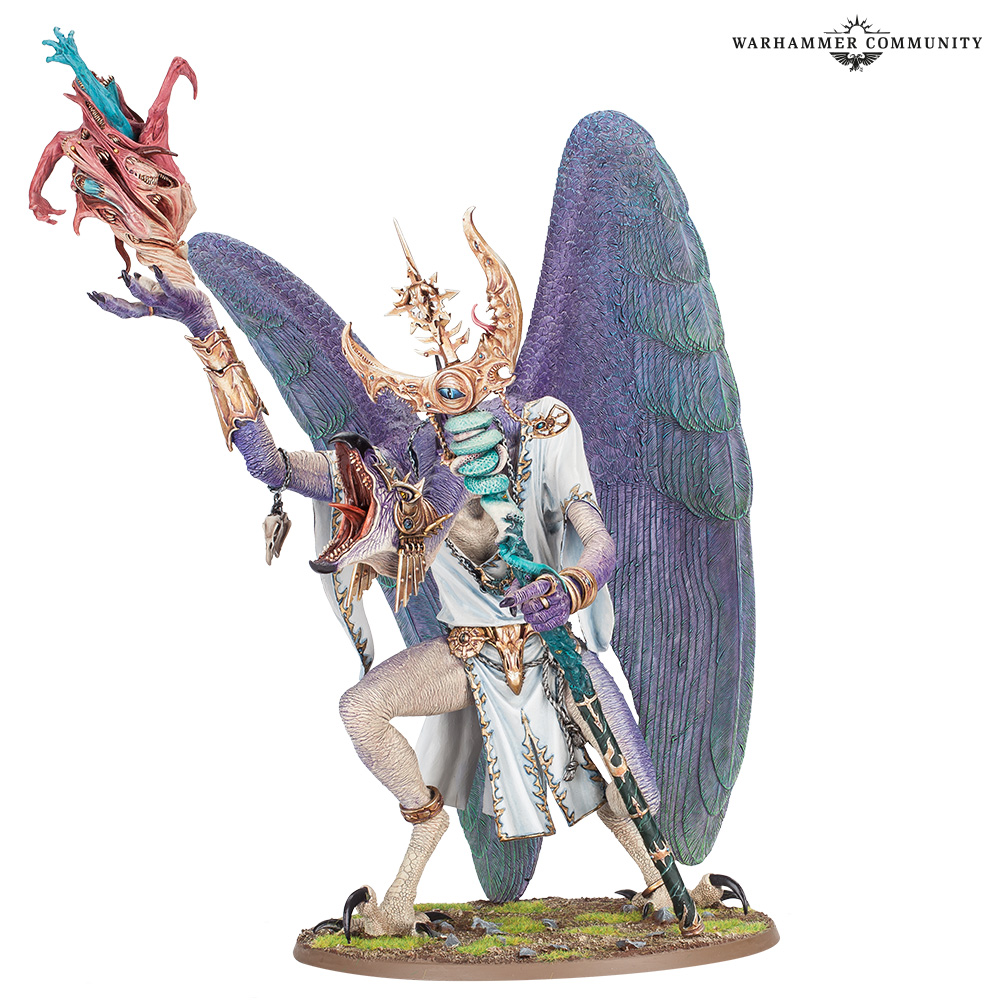
Tzeentch est le dieu du changement, de la magie et des intrigues. Les Seigneurs du Changement sont ses démons majeurs, des sorciers ailés qui manipulent les événements. Ses desseins changent sans cesse, et ses serviteurs provoquent des mutations et des complots pour bouleverser l’ordre établi.
Source de l’imageFaction : Chaos - Death Guard et démons de Nurgle
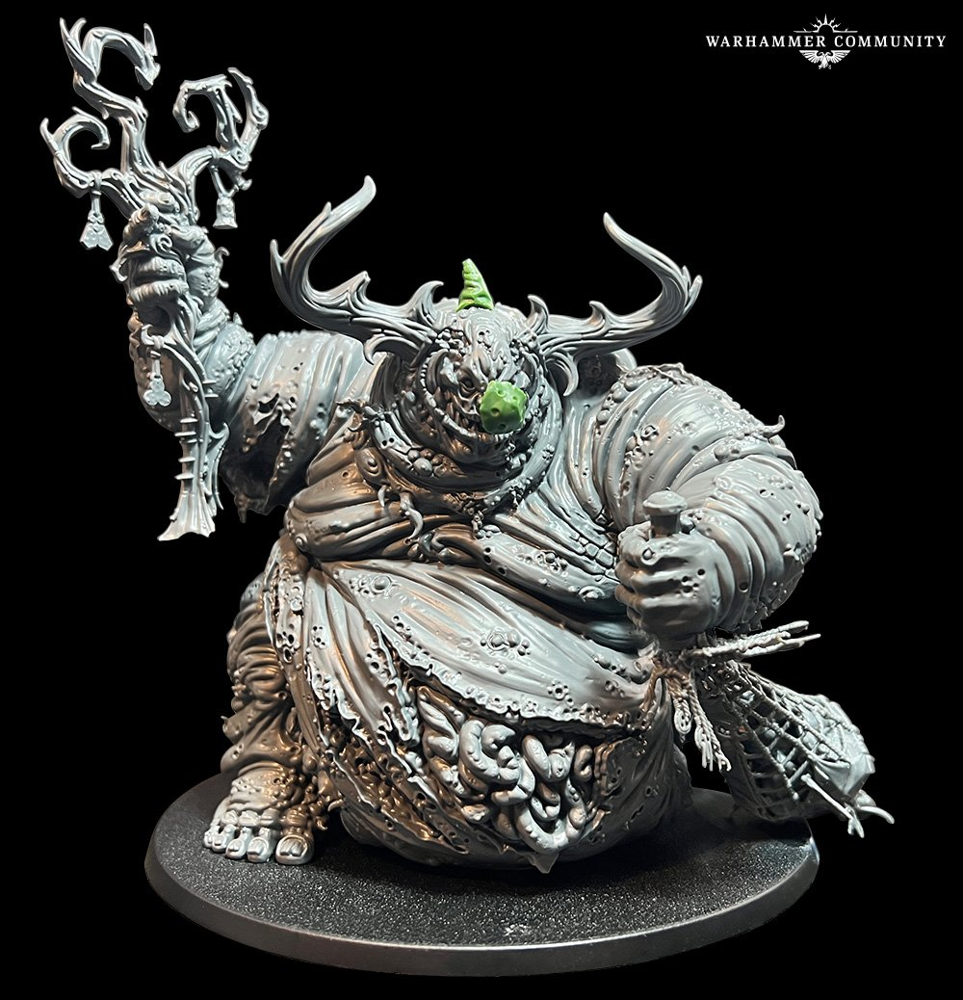
Nurgle est le dieu de la maladie, de la décomposition et du renouveau. Ses Grands Immondes répandent les épidémies et commandent ses hordes démoniaques. Ses adeptes accueillent les maladies comme des dons et répandent leurs épidémies avec une joie dérangeante.
Source de l’imageFaction : Chaos - Emperor’s Children et démons de Slaanesh
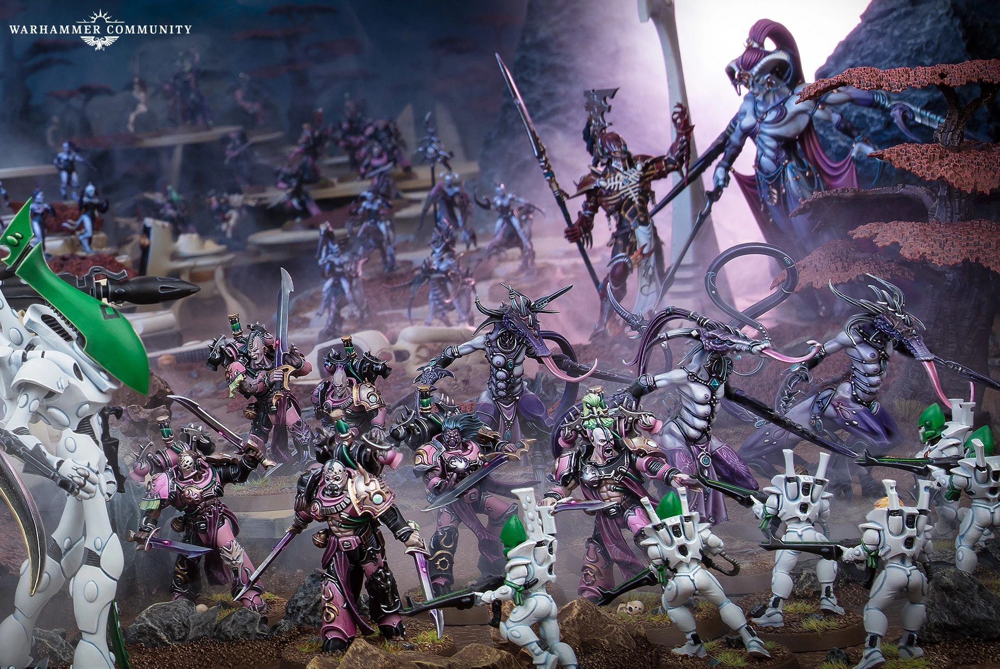
Slaanesh est le dieu de l’excès, des sensations et de l’obsession. Ses démons majeurs, les Gardiens des Secrets, séduisent et combattent avec une grâce redoutable. Ses cultes cherchent à repousser toutes les limites du plaisir, de la sensation et de la perfection, au prix de leur humanité.
Source de l’imageFaction : Chaos - Dark Mechanicum
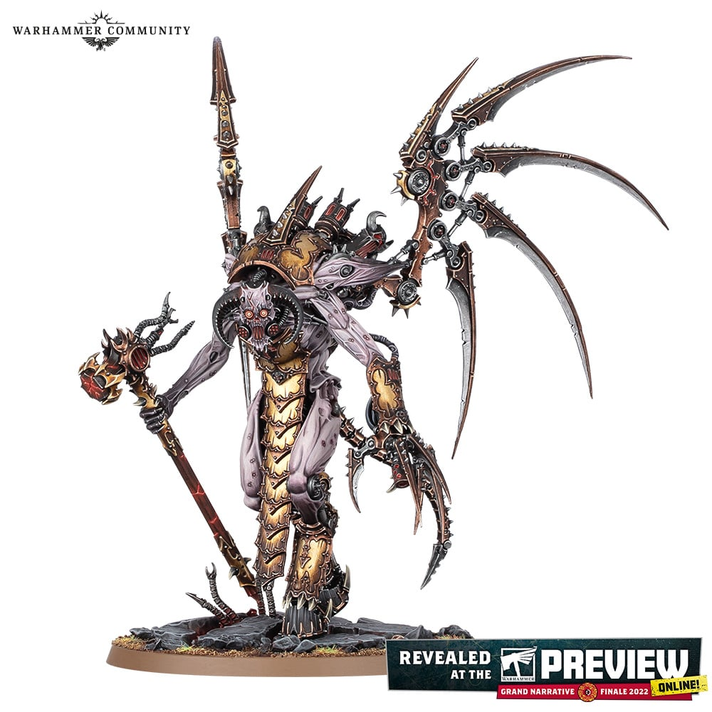
Vashtorr est un puissant démon-artisan qui corrompt les machines et recherche des artefacts capables d’accroître son pouvoir. Il s’est allié à Abaddon pour mettre en œuvre ses plans. Maître des forges infernales, il négocie avec les mortels et les démons pour obtenir les artefacts nécessaires à ses inventions.
Source de l’imageFaction : Xenos - Orks
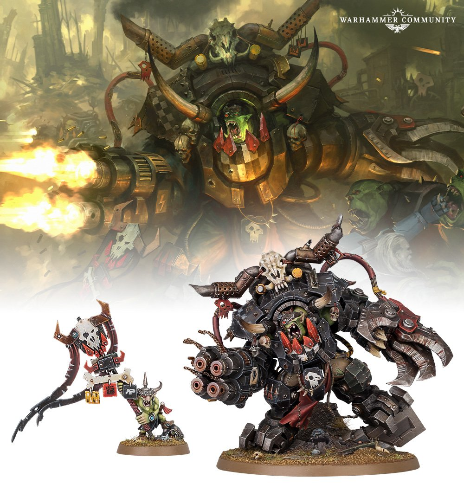
Ghazghkull est l’un des plus puissants chefs de guerre orks. Prophète de la Waaagh!, il rassemble des hordes immenses et entraîne les Orks dans des guerres à travers la galaxie. Ses visions annoncent une Waaagh! sans précédent; de nombreux Orks le suivent dans l’espoir de participer à la plus grande guerre de leur vie.
Source de l’imageFaction : Xenos - Orks
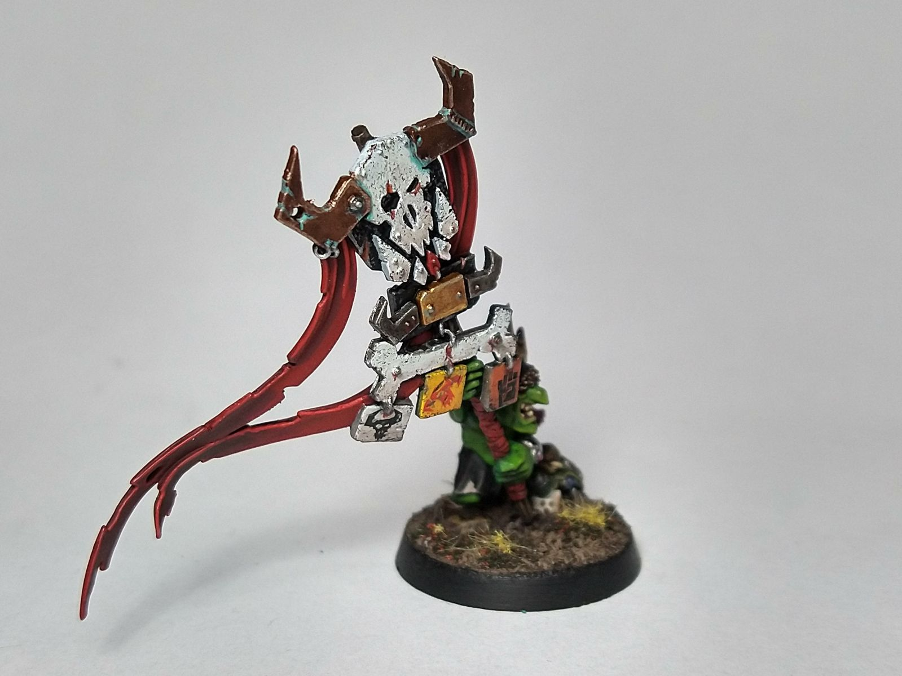
Grot porte-bannière de Ghazghkull et prophète de Gork et Mork, Makari survit à des situations impossibles et accompagne le grand chef ork dans ses guerres. Les Orks racontent que la chance protège ce petit porte-bannière, qui est revenu auprès de Ghazghkull après de nombreuses morts supposées.
Source de l’imageFaction : Xenos - Orks
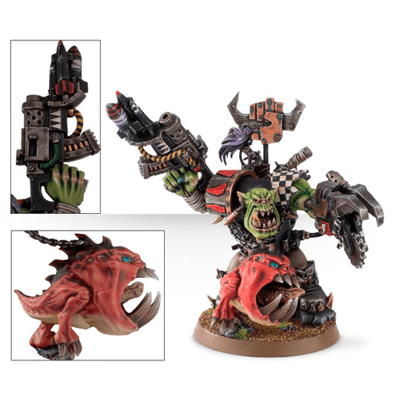
Chef de guerre ork brutal et ambitieux, Grukk a mené sa bande dans la guerre de Rynn et s’est taillé une réputation parmi les bandes des peaux-vertes. Ses conquêtes et ses affrontements avec les forces impériales ont renforcé sa réputation de chef violent capable de rallier de nombreux Boyz.
Source de l’imageFaction : Xenos - Orks
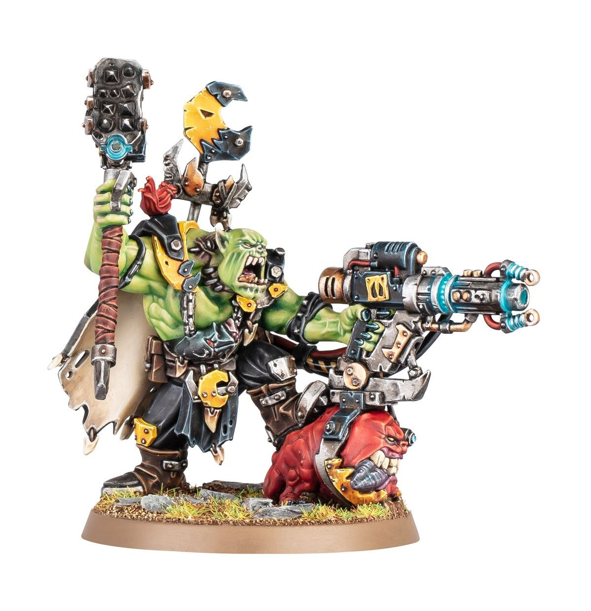
Chef de guerre des Bad Moons, Ufthak Blackhawk est connu pour son marteau personnalisé et son goût des attaques spectaculaires. Son squig Princesse l’accompagne partout. Ses exploits sont racontés dans les romans Brutal Kunnin’ et Da Big Dakka, où sa ruse lui permet de survivre à des situations improbables.
Source de l’imageFaction : Xenos - Necrons
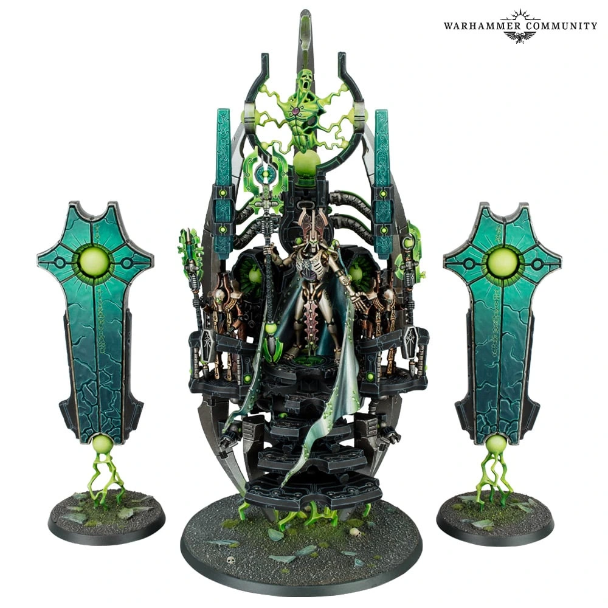
Szarekh est le Roi Silencieux et le souverain des Nécrons. Après des millions d’années d’exil, il est revenu pour réunir son peuple et reprendre le contrôle de la galaxie. Son retour vise à réunir les dynasties, à lutter contre les flottes-ruche tyranides et à rendre aux Necrons leur empire perdu.
Source de l’imageFaction : Xenos - Necrons
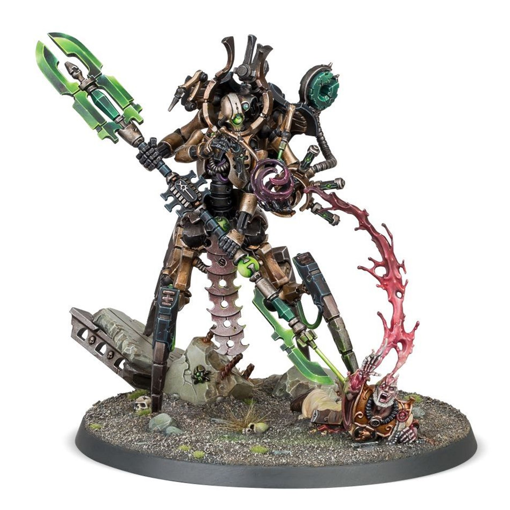
Technomancien Necron obsédé par les secrets de la vie, Szeras conduit des expériences pour améliorer ses semblables et accroître sa maîtrise de la biotransférence. Il considère les formes de vie comme des sujets d’étude et cherche à libérer le potentiel énergétique caché dans les organismes vivants.
Source de l’imageFaction : Xenos - Necrons, dynastie Sautekh
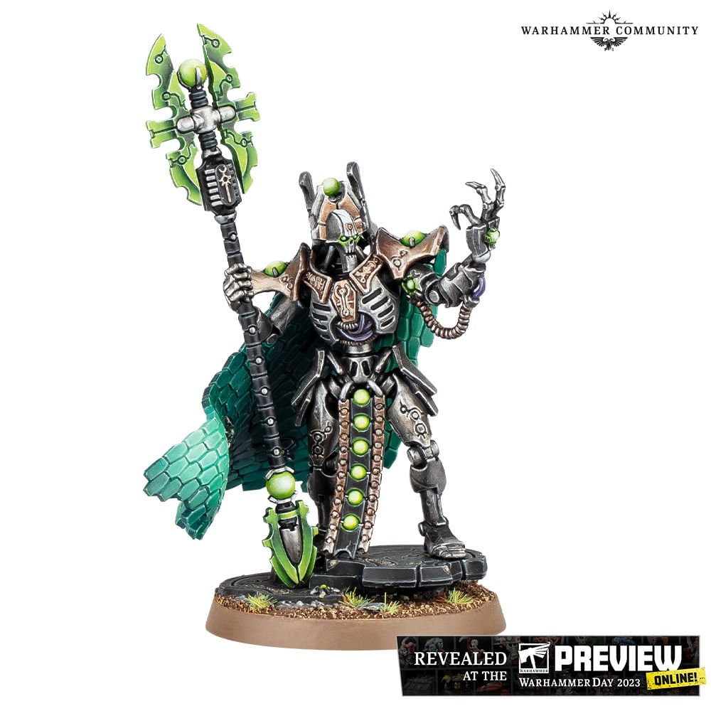
Phaëron de la dynastie Sautekh, Imotekh est un stratège redoutable qui veut étendre son pouvoir sur les autres dynasties Necrons et reconquérir l’empire de son peuple. Il a pris le pouvoir au sein de la dynastie Sautekh et étend son influence par des campagnes méthodiques et des victoires soigneusement préparées.
Source de l’imageFaction : Xenos - Necrons
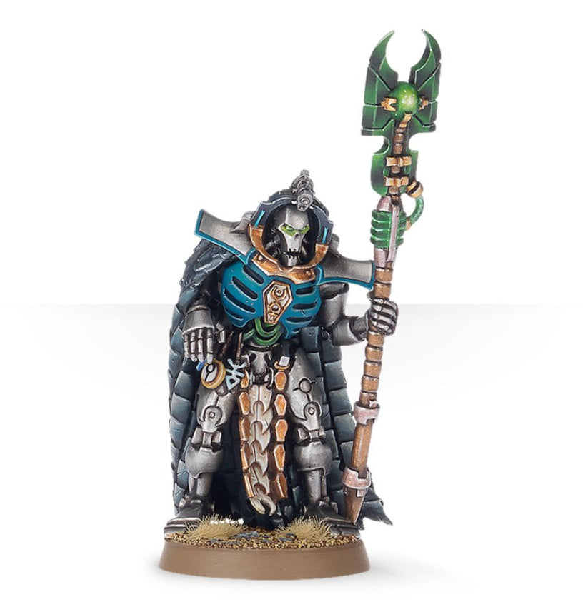
Seigneur Necron et collectionneur infatigable, Trazyn rassemble des artefacts et des spécimens historiques dans les galeries de Solemnace. Il n’hésite pas à intervenir pour enrichir sa collection. Ses galeries contiennent des reliques et des êtres prélevés dans différentes époques; il intervient parfois dans les conflits pour compléter cette collection.
Source de l’imageFaction : Xenos - Ynnari
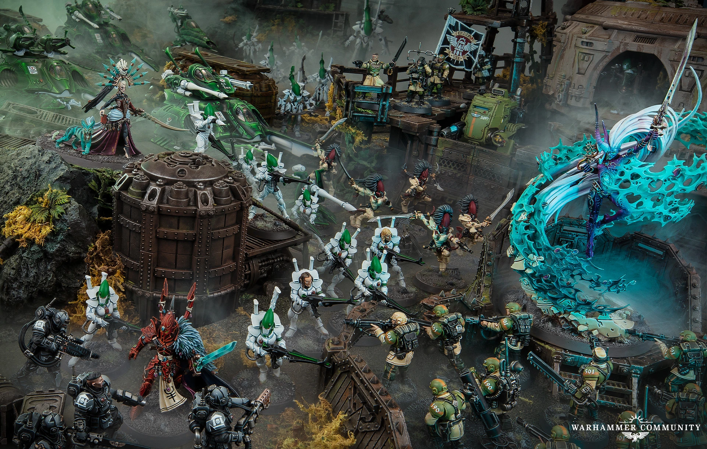
Prophétesse des Ynnari, Yvraine rassemble des Aeldari issus de plusieurs peuples. Elle sert Ynnead, le dieu des morts, et cherche à assurer la survie des siens. Elle a éveillé Ynnead et fondé le mouvement Ynnari, qui rassemble des Aeldari aux origines variées autour d’une même prophétie.
Source de l’imageFaction : Xenos - Aeldari
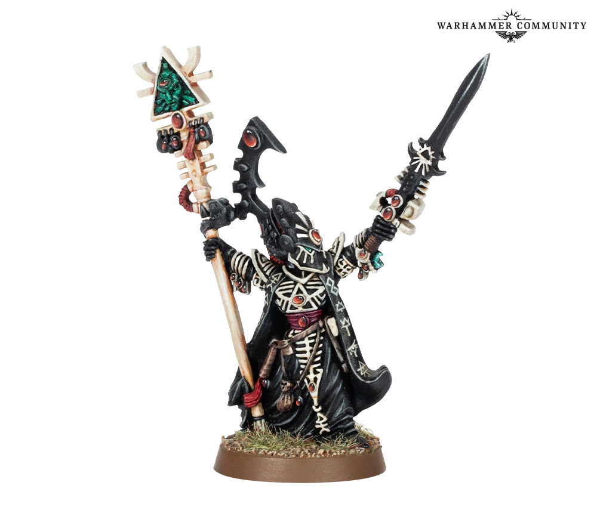
Eldrad Ulthran est un grand prophète du vaisseau-monde Ulthwé. Ses visions et son pouvoir psychique guident les Aeldari à travers les dangers de la galaxie. Ses visions l’amènent à intervenir dans les affaires d’autres peuples lorsque cela peut détourner une catastrophe annoncée pour les Aeldari.
Source de l’imageFaction : Xenos - Aeldari
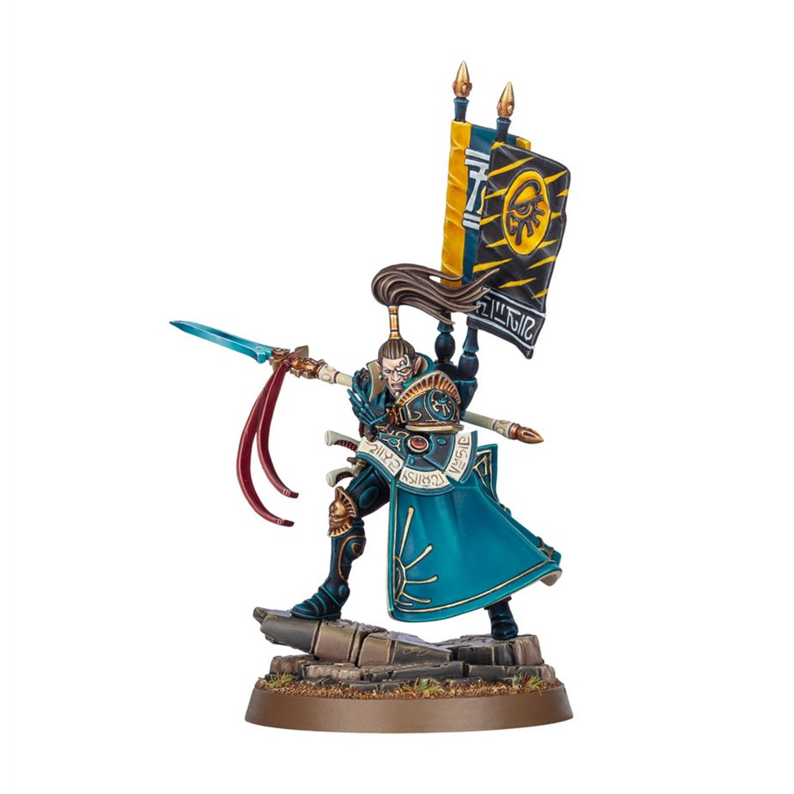
Seigneur des corsaires Eldritch Raiders, Yriel défend le vaisseau-monde Iyanden et combat avec la Lance du Crépuscule. Après son exil, il est revenu défendre Iyanden et mène aussi les corsaires qui sillonnent les routes spatiales à la recherche de gloire et de richesses.
Source de l’imageFaction : Xenos - Aeldari
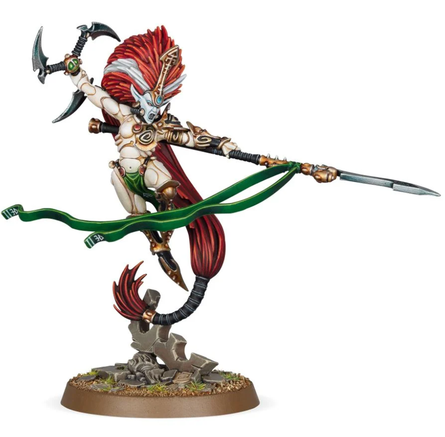
Jain Zar est une Phoenix Lord et la fondatrice des Banshees hurlantes. Cette guerrière légendaire mène les Aeldari au combat avec une vitesse redoutable. Comme les autres Seigneurs Phoenix, elle peut renaître lorsqu’un nouvel Exarque revêt son armure, perpétuant ainsi son héritage guerrier.
Source de l’imageFaction : Xenos - Drukhari
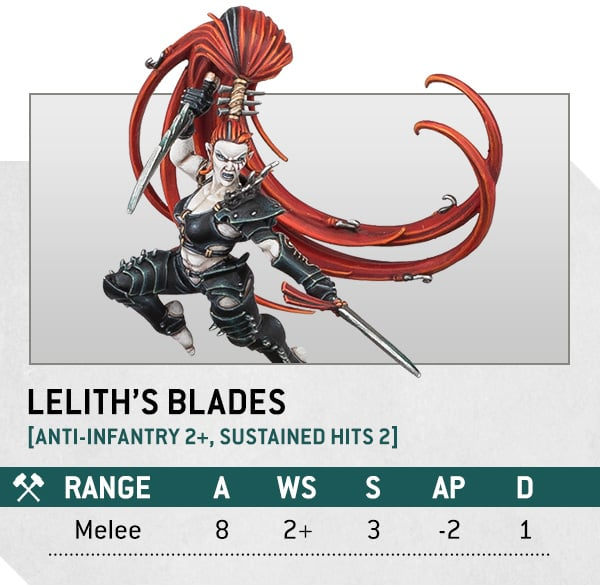
Lelith Hesperax est une combattante célèbre des arènes de Commorragh. Sa vitesse et sa maîtrise des lames en font l’une des guerrières les plus redoutées des Drukhari. Elle est célèbre pour ses duels sans armure et ses victoires dans les arènes, où elle domine ses adversaires par la vitesse et la précision.
Source de l’imageFaction : Xenos - Drukhari
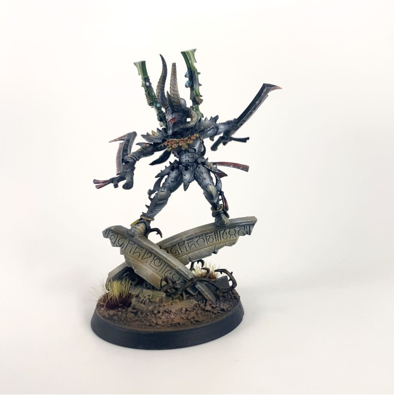
Maître des Incubes, Drazhar est un guerrier d’élite qui manie ses lames avec une précision meurtrière. Son identité demeure entourée de mystère. Il mène les Incubes au combat et laisse derrière lui une réputation de duelliste implacable, tandis que son passé reste volontairement obscur.
Source de l’imageFaction : Xenos - Drukhari
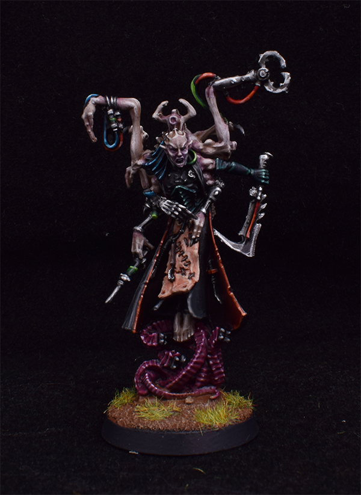
Urien Rakarth est le plus célèbre des Tourmenteurs de Commorragh. Il dirige les expériences des Cérastes de la Haemonculi et transforme ses victimes en créations monstrueuses. Ses ateliers et ses expériences contribuent au pouvoir des Haemonculi, qui promettent aux Drukhari de survivre à des blessures extrêmes.
Source de l’imageFaction : Xenos - Drukhari
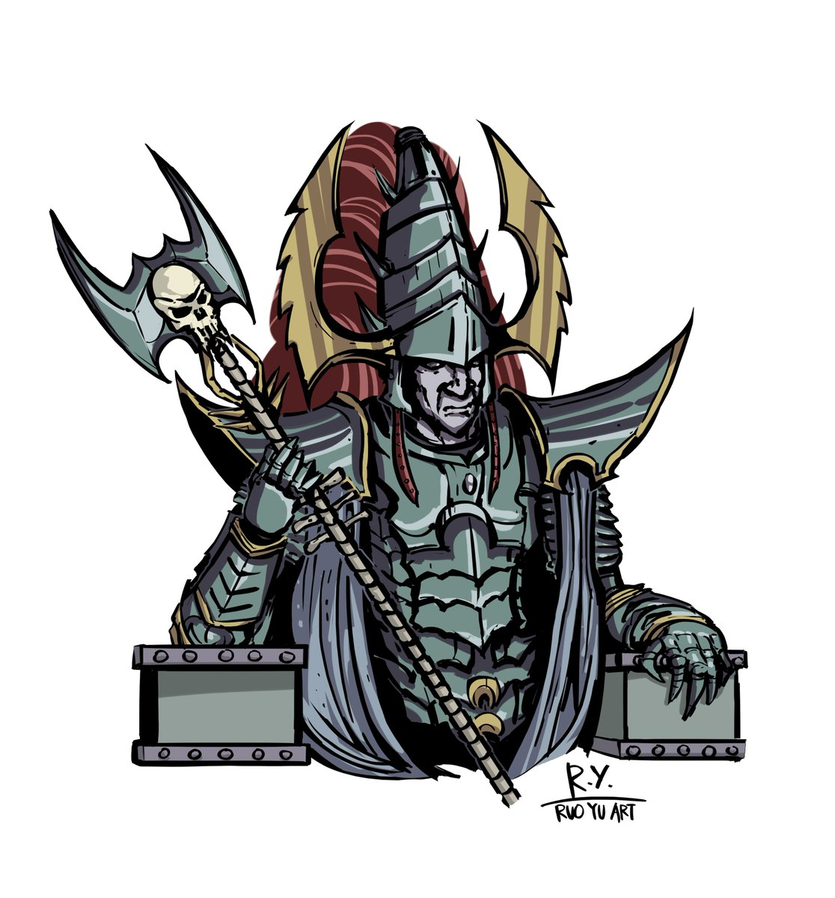
Seigneur suprême de Commorragh, Vect gouverne les Drukhari par la peur, les complots et les démonstrations de pouvoir. Il a bâti son autorité au sein du Kabal du Cœur Noir. Il contrôle Commorragh par des alliances temporaires, des trahisons calculées et la peur de représailles immédiates.
Source de l’imageFaction : Xenos - Empire Tau
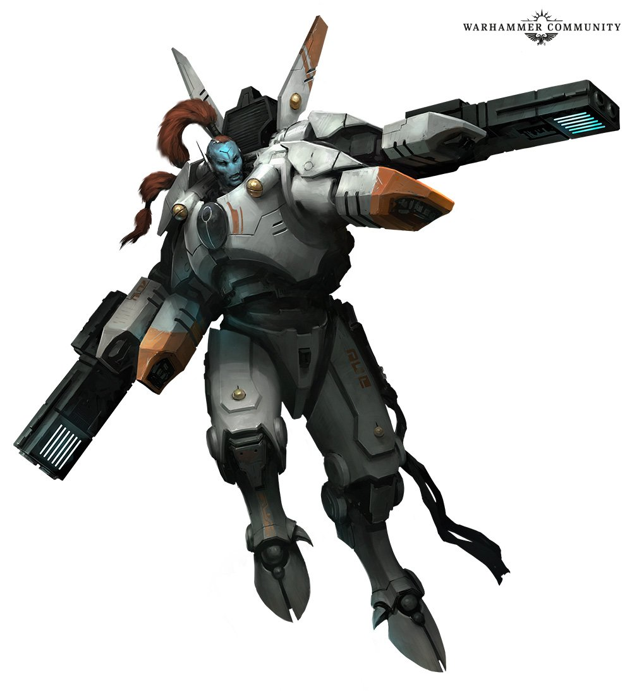
O’Shaserra, appelée Shadowsun, est une commandante T’au et une stratège patiente. Elle dirige des campagnes militaires et défend l’expansion de son empire au nom du Bien Suprême. Elle privilégie l’observation, la mobilité et les frappes précises, conformément à la doctrine Kauyon qu’elle maîtrise particulièrement.
Source de l’imageFaction : Xenos - Enclaves Farsight
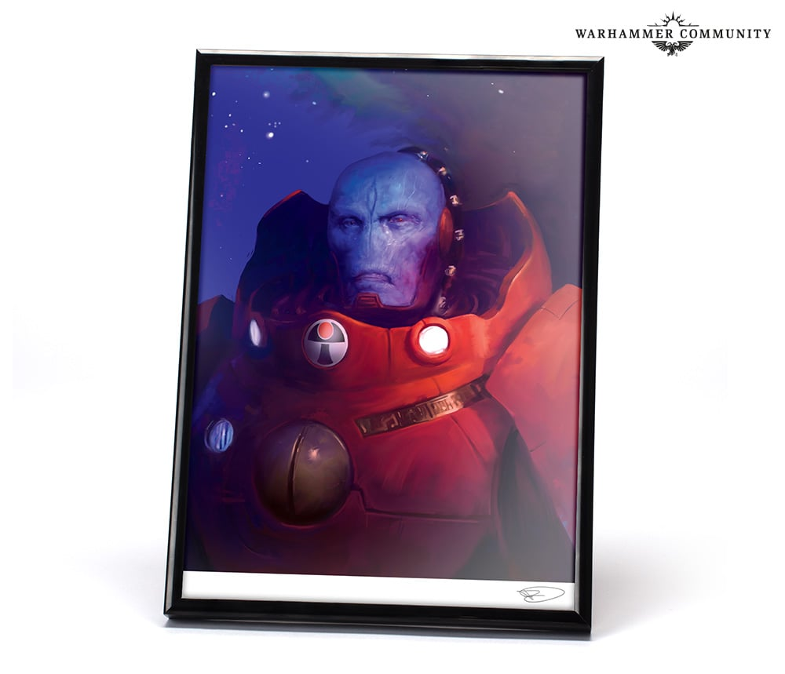
Farsight est le chef des Enclaves Farsight, un groupe dissident de l’Empire T’au. Il mène ses troupes au combat à bord de son exo-armure rouge. Après s’être éloigné du pouvoir central T’au, il a fondé les Enclaves Farsight et conduit ses propres forces dans les zones de guerre.
Source de l’imageFaction : Xenos - Empire Tau
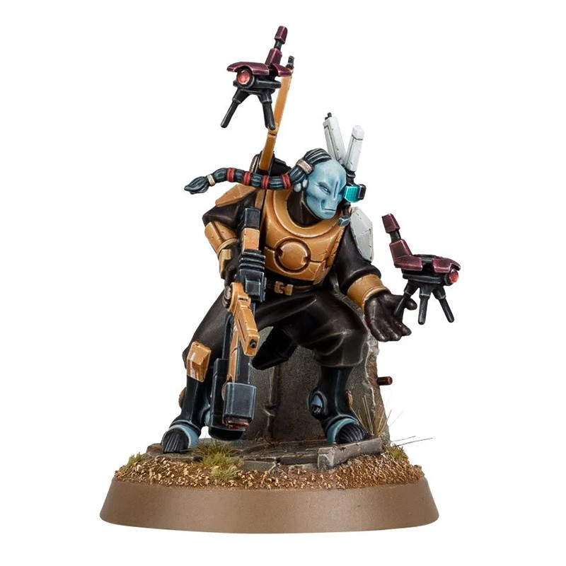
Sub-commandant de l’Empire T’au, Darkstrider est un spécialiste de la reconnaissance et des tactiques d’infiltration. Il entraîne les équipes de cibleurs. Il accompagne les équipes de reconnaissance et utilise son analyse du terrain pour révéler les faiblesses des défenses ennemies.
Source de l’imageFaction : Xenos - Empire Tau
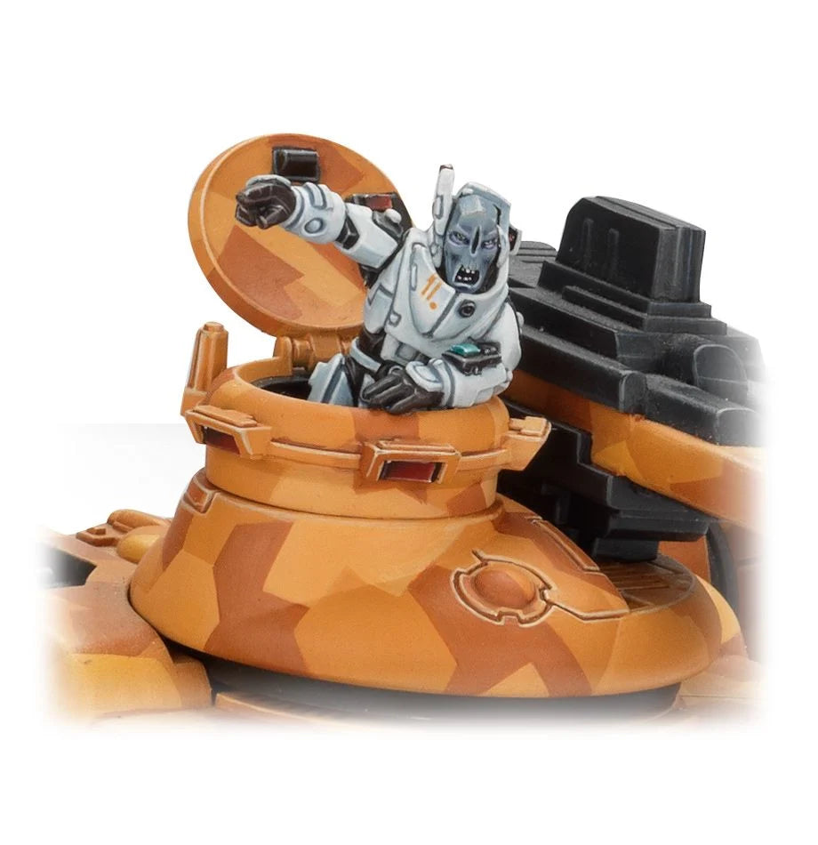
Longstrike est un célèbre commandant de char de la caste du Feu. Son expérience du Hammerhead en fait l’un des tireurs les plus redoutés de l’Empire T’au. Il est associé aux équipages de Hammerhead et pousse les tactiques blindées T’au à leur plus haut niveau d’efficacité.
Source de l’imageFaction : Xenos - Tyranides
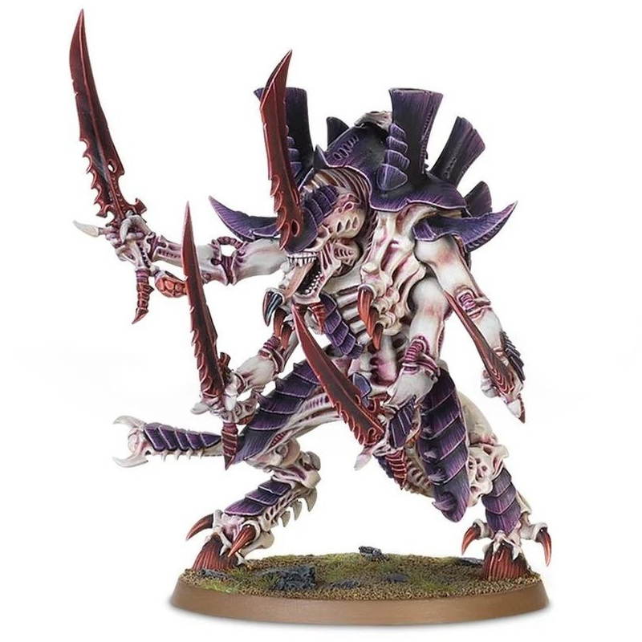
Le Swarmlord est un organisme de commandement que l’Esprit-ruche crée pour affronter des ennemis particulièrement dangereux. Il combine une grande puissance de combat à une intelligence tactique exceptionnelle. Chaque incarnation conserve l’expérience des batailles précédentes, permettant à l’Esprit-ruche d’adapter ses stratégies à ses ennemis.
Source de l’imageFaction : Xenos - Tyranides
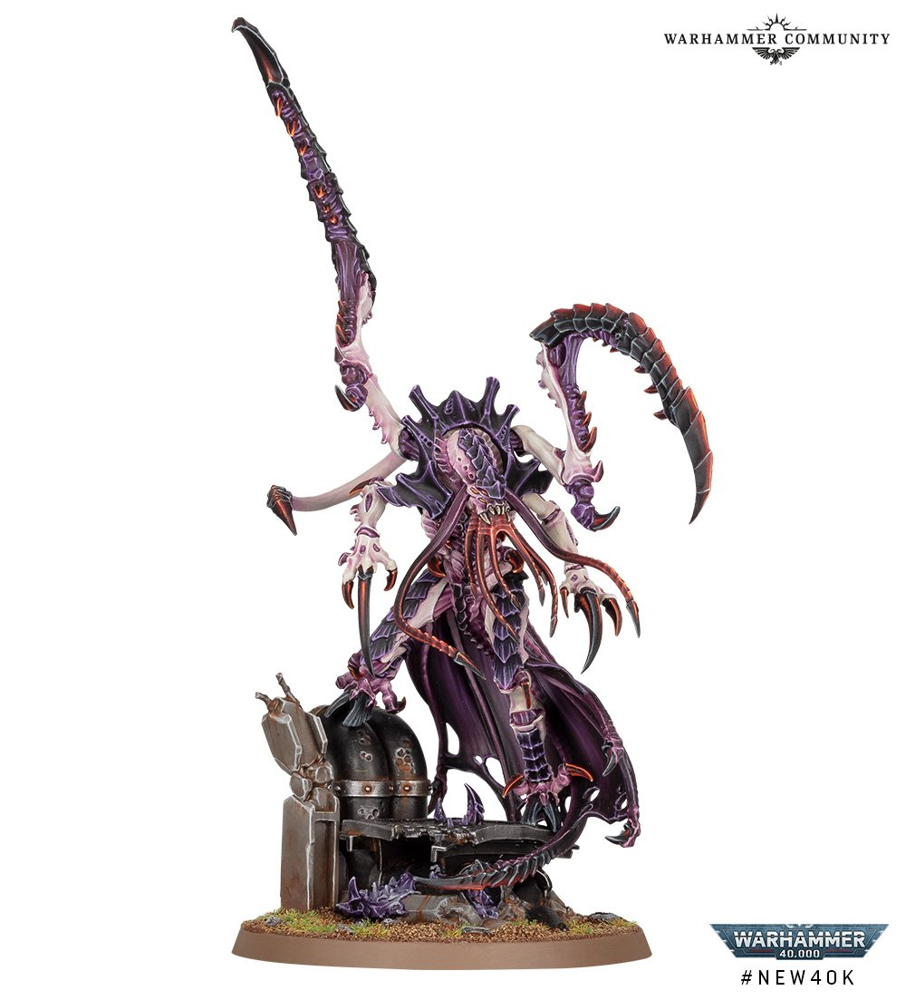
Bioforme furtive de type Lictor, le Deathleaper traque les commandants ennemis et sème la panique avant l’arrivée de la flotte-ruche. Il cible les officiers et les figures de commandement, afin que la peur et la confusion désorganisent les défenseurs avant l’assaut tyranide.
Source de l’imageFaction : Xenos - Tyranides
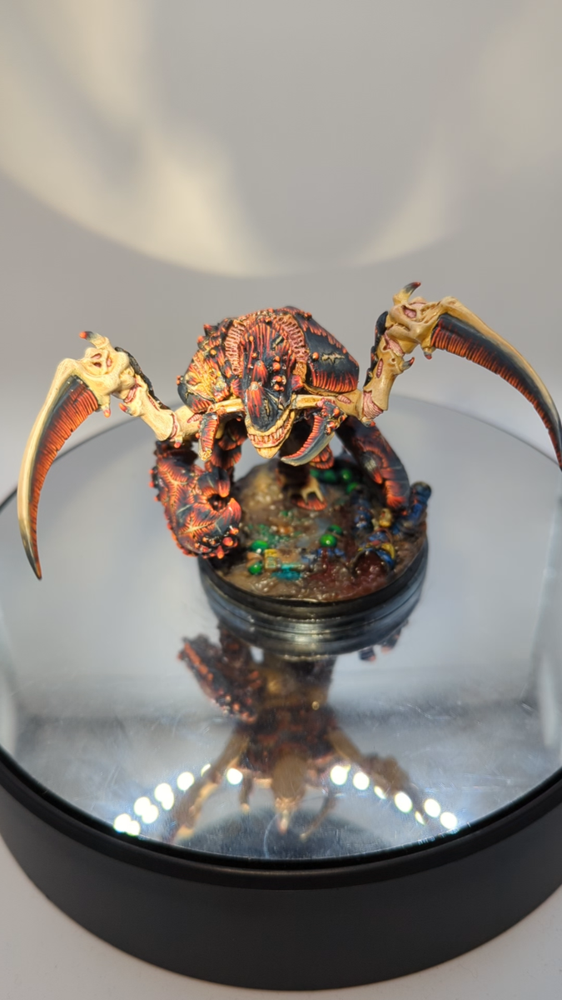
Old One Eye est un Carnifex légendaire, célèbre pour sa résistance et sa capacité à revenir après des blessures qui auraient détruit toute autre créature. Les récits de ses retours après des blessures mortelles lui ont donné une réputation presque mythique parmi les défenseurs impériaux.
Source de l’imageFaction : Xenos - Tyranides
Créature synaptique dotée d’immenses pouvoirs psychiques, le Neurotyran coordonne les essaims et amplifie l’influence de l’Esprit-ruche. Ses Neuroloïdes servent de relais à ses pouvoirs et renforcent la coordination psychique des créatures tyranides alentour.
Source de l’imageFaction : Xenos - Cultes Genestealers
Le Patriarche est à l’origine d’un culte Genestealer et domine ses adeptes par son pouvoir psychique. Sous son influence, les membres du culte préparent une révolte et l’arrivée des Tyranides. Sa présence psychique lie les adeptes au culte et entretient leur croyance en une libération qui coïncidera avec l’arrivée des Tyranides.
Source de l’imageFaction : Xenos - Cultes Genestealers
Le Magus est le guide spirituel et le principal psyker d’un Culte Genestealer. Il répand la doctrine du culte et prépare le soulèvement contre les autorités impériales. Il interprète les signes du culte, recrute de nouveaux fidèles et prépare les insurrections depuis les zones habitées qu’il infiltre.
Source de l’imageFaction : Xenos - Cultes Genestealers
Héros pistolero du culte, le Kelermorph apparaît lors des révoltes pour éliminer les officiers et inspirer les insurgés par ses exploits. Ses trois pistolets et ses apparitions soudaines en font un héros de propagande autant qu’un assassin très efficace.
Source de l’imageFaction : Xenos - Cultes Genestealers
Éclaireuse et tireuse d’élite du culte, la Jackal Alphus ouvre la voie aux colonnes insurgées et désigne les cibles prioritaires aux combattants. À moto, elle repère les positions ennemies et transmet des indications de tir aux membres de son culte.
Source de l’imageFaction : Xenos - Ligues de Votann
Ûthar le Destiné est un héros de la Ligue Thurienne et un chef des Kin. Son jugement au combat et sa lame ancestrale aident les Ligues de Votann à remporter leurs batailles. Kahl de la Ligue Thurienne, il porte la lame ancestrale Forgebreaker et transforme les Jugements des Ancêtres en avantage au combat.
Source de l’imageFaction : Xenos - Ligues de Votann
Les Grimnyrs sont des psykers Kin qui puisent dans les technologies ancestrales des Ligues et guident leurs communautés au combat. Ils sont accompagnés de drones CORV et consultent les Ancêtres pour guider les Kin dans leurs décisions et leurs batailles.
Source de l’imageFaction : Xenos - Ligues de Votann
Les Champions Einhyr sont des guerriers Kin d’élite en exo-armure, choisis pour mener les troupes dans les affrontements les plus dangereux. Leur exo-armure leur permet de tenir les positions les plus dangereuses et de briser les lignes ennemies au corps à corps.
Source de l’imageFaction : Xenos - Ligues de Votann
Ingénieur Brôkhyr, l’Iron-master entretient et améliore les machines de guerre des Ligues de Votann sur le champ de bataille. Il travaille avec des assistants et des machines spécialisées pour maintenir l’équipement des Kin en état pendant les longues campagnes.
Source de l’image